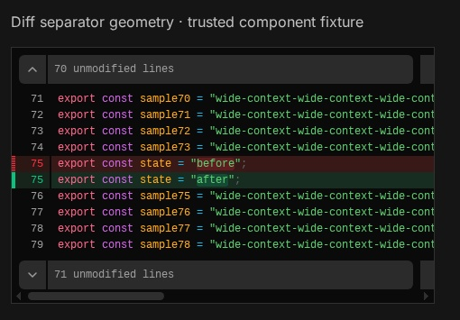
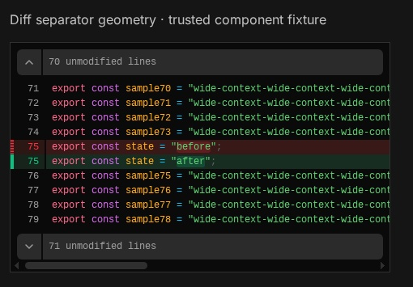

#7819 · Reserved scrollbar gutter narrows diff context separators
Trusted base: df9619d8e8aac4aff00c0c3ff9b8ef4e2823e4f2
Verdict: REPRODUCED · Root-cause confidence: high · Reproduction label: confirmed-repro.
1. TL;DR
The actual shared BbDiff component on trusted main renders collapsed-context separators 15px short of the code area's right edge in Linux Chromium 152 with classic scrollbars. The code box is 468px wide, but its usable content width and both separator wrappers are only 453px. A reserved vertical scrollbar gutter causes that difference, even though the code box does not need vertical scrolling. Changing only that element's scrollbar-gutter to auto removes the 15px gap while preserving horizontal scrolling and the inherited scrollbar color. The same agent repeated the failure and the control in a second clean checkout; this is a component-level reproduction, not a new packaged-Electron end-to-end test.
2. Claims vs findings
| Claim | Finding | Evidence |
|---|---|---|
| Collapsed-context separators stop 15px before the right edge. | Verified | Two visible separator wrappers end at x=482 while the code box ends at x=497 in both trusted checkouts. |
| The defect can expose the row background when lines overflow horizontally. | Verified | The real component has scrollWidth=1339 and clientWidth=453. The screenshot shows a gray block beyond the rounded separator content. |
| The dependency combines stable gutter reservation, horizontal overflow, and container-query widths. | Verified | The frozen 1.2.12 dependency CSS has overflow: … scroll … clip, scrollbar-gutter: stable, and unified separator width:100cqi. Runtime overflow computes to scroll hidden. |
| Inherited non-auto scrollbar color defeats the zero-width WebKit scrollbar treatment. | Verified in Chromium 152 | Resetting only scrollbar-color to auto removes the gutter while leaving scrollbar-gutter:stable. Restoring the inherited color and changing only gutter reservation also removes the gap. |
| One shared host component affects core and plugin diff consumers. | Verified by source routing; not every UI surface driven | DiffHost loads BbDiff; the plugin SDK maps experimental_Diff to the lazy plugin diff host. The reproduction directly mounts that real renderer, with no diff mock. |
| The exact packaged Electron patch version reproduces; Chrome 158 and other engines behave differently; a dependency upgrade alone does not help. | Unverified here | This investigation uses Chrome for Testing 152.0.7977.82, not Electron 44.10.2 / Chromium 152.0.7977.169. No other browser, upgrade, desktop platform, or full application route was run. |
3. Environment
- Two separately cloned public
get-bb/bbcheckouts, pinned to the full trusted commit above. Origin was fetched again before publication and had not advanced. - Debian GNU/Linux 12, Linux x86-64; Node 22.19.0; frozen workspace dependencies;
@pierre/diffs1.2.12. - Chrome for Testing 152.0.7977.82, headless, driven only through the BB Browser Automation plugin. The browser reserves a measured 15px classic gutter; this is not inferred from the user agent alone.
- Browser executable, shared-library runtime, fonts, and browser profiles are isolated tooling in temporary storage. No repository dependency or lockfile was changed.
- Vite component fixtures listen only on
127.0.0.1:48919and127.0.0.1:48920. No BB server, daemon, real project, provider session, imported store, or production database is used.
4. Minimal reproduction
This reproduction was authored from the trusted component and installed dependency, not copied from the issue's example or a pull request. It renders a 150-line synthetic TypeScript file with one changed line and long surrounding lines. The real app stylesheet and the real BbDiff implementation are used; no renderer or geometry is mocked.
- Clone
https://github.com/get-bb/bb.git, enter the checkout, and pin the recorded main commit. Prepare the normal repository build:git checkout --detach df9619d8e8aac4aff00c0c3ff9b8ef4e2823e4f2 pnpm install --frozen-lockfile --prefer-offline pnpm exec turbo run build --filter=@get-bb/plugin-sdk pnpm exec turbo run build
The explicit SDK build repairs clean-checkout build ordering: an initial full build failed because the plugin SDK runtime dist did not yet exist. The SDK build followed by the full build passed, without changing source. Both prepared checkouts completed 72 build tasks.
- Create these three temporary fixture files under
apps/app/:issue-7819.html
<!doctype html> <html lang="en" class="dark"> <meta charset="utf-8"> <meta name="viewport" content="width=device-width,initial-scale=1"> <title>Diff layout reproduction 7819</title> <body><div id="root"></div><script type="module" src="/issue-7819.tsx"></script></body> </html>
issue-7819.tsx
import React from "react"; import { createRoot } from "react-dom/client"; import { parseDiffFromFile } from "@pierre/diffs"; import BbDiff from "./src/components/code/BbDiff"; import { setPreferredTheme } from "./src/hooks/useTheme"; import "./src/app.css"; setPreferredTheme("dark"); const before = Array.from({ length: 150 }, (_, index) => index === 74 ? 'export const state = "before";' : 'export const sample' + index + ' = "' + 'wide-context-'.repeat(12) + '";', ).join("\n") + "\n"; const after = before.replace('state = "before"', 'state = "after"'); const file = parseDiffFromFile( { name: "sample.ts", contents: before }, { name: "sample.ts", contents: after }, ); const root = document.getElementById("root"); if (!root) throw new Error("Missing mount point"); createRoot(root).render( <main style={{ padding: 28, background: "var(--background)", minHeight: "100vh" }}> <h1 style={{ marginBottom: 16 }}>Diff separator geometry · trusted component fixture</h1> <section style={{ width: 470, border: "1px solid var(--border)" }}> <BbDiff file={file} fullFileContents={null} view="unified" overflow="scroll" showLineNumbers /> </section> </main>, );vite.issue-7819.config.ts
import path from "node:path"; import { defineConfig } from "vite"; import react from "@vitejs/plugin-react"; import tailwindcss from "@tailwindcss/vite"; import { sharedUiEnvSeam } from "./vite-shared-ui-seam"; import { pluginZodRuntime } from "./vite-plugin-zod-runtime"; export default defineConfig({ plugins: [pluginZodRuntime(), sharedUiEnvSeam(), react(), tailwindcss()], resolve: { conditions: ["source"], dedupe: ["react", "react-dom"], alias: { "@": path.resolve(__dirname, "src") }, }, server: { host: "127.0.0.1", strictPort: true }, }); - Confirm port 48919 is free and run the isolated fixture from
apps/app:node_modules/.bin/vite --config vite.issue-7819.config.ts --port 48919
- Use the Browser Automation plugin with Chrome 152 and a fresh profile on the fixture's machine. The machine and session values below are variables obtained from your own BB environment, not supplied identifiers:
bb browser-automation open --backend local --headless --machine "$HOST_ID" --json bb browser-automation run "$SESSION_ID" --script 'const p = await browser.getPage("main"); await p.goto("http://127.0.0.1:48919/issue-7819.html"); console.log(await p.snapshot());' --jsonAfter the diff has rendered, save the following owner-boundary check as
layout-check.js. It requires real collapsed context and working horizontal scrolling before asserting separator geometry.const page = await browser.getPage("main"); const result = await page.evaluate(() => { const host = document.querySelector("diffs-container"); const code = host?.shadowRoot?.querySelector("[data-code]"); if (!(code instanceof HTMLElement)) throw new Error("Diff has not rendered"); const codeBounds = code.getBoundingClientRect(); const separators = [...code.querySelectorAll("[data-separator-wrapper]")] .map((separator) => separator.getBoundingClientRect()) .filter((bounds) => bounds.width > 0) .map((bounds) => ({ width: bounds.width, right: bounds.right, gap: codeBounds.right - bounds.right })); if (separators.length === 0) throw new Error("Collapsed context is missing"); const styles = getComputedStyle(code); const previousScrollLeft = code.scrollLeft; code.scrollLeft = 120; const scrollLeft = code.scrollLeft; code.scrollLeft = previousScrollLeft; return { browser: navigator.userAgent, overflow: styles.overflow, gutter: styles.scrollbarGutter, scrollbarColor: styles.scrollbarColor, scrollbarWidth: styles.scrollbarWidth, offsetWidth: code.offsetWidth, clientWidth: code.clientWidth, scrollWidth: code.scrollWidth, scrollLeft, codeRight: codeBounds.right, separators, }; }); console.log(JSON.stringify(result, null, 2)); if (result.scrollLeft === 0) throw new Error("Horizontal scrolling is not exercised"); const gap = Math.max(...result.separators.map((separator) => separator.gap)); if (gap > 0.5) throw new Error("Collapsed-context separator ends " + gap + "px before the code edge"); console.log("PASS: collapsed-context separators span the code area and horizontal scrolling works");bb browser-automation run "$SESSION_ID" --script-file "$PWD/layout-check.js" --script-host "$HOST_ID" --json
Expected versus actual
Expected: each visible separator wrapper ends at the code box edge (gap ≤0.5px), while horizontal scrolling works. Actual: the check fails with this output on unchanged production source:
{
"browser": "Mozilla/5.0 (X11; Linux x86_64) AppleWebKit/537.36 (KHTML, like Gecko) HeadlessChrome/152.0.0.0 Safari/537.36",
"overflow": "scroll hidden",
"gutter": "stable",
"scrollbarColor": "oklab(0.81 0 0 / 0.2) rgba(0, 0, 0, 0)",
"scrollbarWidth": "auto",
"offsetWidth": 468,
"clientWidth": 453,
"scrollWidth": 1339,
"scrollLeft": 120,
"codeRight": 497,
"separators": [
{
"width": 453,
"right": 482,
"gap": 15
},
{
"width": 453,
"right": 482,
"gap": 15
}
]
}
Error: Collapsed-context separator ends 15px before the code edge

Controlled intervention
Without changing production source, set only the actual code element's gutter reservation:
bb browser-automation run "$SESSION_ID" --script 'const p = await browser.getPage("main"); await p.evaluate(() => { document.querySelector("diffs-container").shadowRoot.querySelector("[data-code]").style.scrollbarGutter = "auto"; });' --json
Run the same layout-check.js again. It now passes; non-auto scrollbar color remains in effect:
{
"browser": "Mozilla/5.0 (X11; Linux x86_64) AppleWebKit/537.36 (KHTML, like Gecko) HeadlessChrome/152.0.0.0 Safari/537.36",
"overflow": "scroll hidden",
"gutter": "auto",
"scrollbarColor": "oklab(0.81 0 0 / 0.2) rgba(0, 0, 0, 0)",
"scrollbarWidth": "auto",
"offsetWidth": 468,
"clientWidth": 468,
"scrollWidth": 1339,
"scrollLeft": 120,
"codeRight": 497,
"separators": [
{
"width": 468,
"right": 497,
"gap": 0
},
{
"width": 468,
"right": 497,
"gap": 0
}
]
}
PASS: collapsed-context separators span the code area and horizontal scrolling works

5. Root cause
- The app's global rule sets a non-auto
scrollbar-color. That inherited property reaches the shadow DOM: the measured code element hasoklab(0.81 0 0 / 0.2) rgba(0, 0, 0, 0), notauto. See app.css:109–113. - The frozen dependency's code container has this combination. Chromium 152 computes the vertical axis to
hidden, and the stable gutter still reserves width. The dependency's intended zero-width scrollbar customization does not remove the classic gutter while the standard scrollbar color is active:[data-code] { overflow: var(--diffs-overflow-override, scroll) clip; scrollbar-gutter: stable; } [data-code]::-webkit-scrollbar { width: 0; height: var(--diffs-scrollbar-gutter); } @supports (width: 1cqi) { [data-unified] { & [data-separator="line-info"] [data-separator-wrapper] { padding-inline: var(--diffs-gap-inline, var(--diffs-gap-fallback)); width: 100cqi; } } }These relevant declarations were extracted from the installed
@pierre/diffs/dist/style.js. The dependency version and integrity are pinned in pnpm-lock.yaml:9234–9238; these excerpts are not app-owned CSS. - The separator wrapper's
100cqiresolves to the content width, 453px rather than the outer 468px. The overflowing diff grid still covers the code area. The 15px mismatch produces the exposed row background and inset rounded endpoint. - The shared options in BbDiff.tsx:90–110 leave the dependency's gutter rule unmodified. DiffHost.tsx:38–48 and the SDK mapping establish the shared rendering path. The application-wide scope is a source-backed inference, not a claim that every surface was separately clicked.
Isolation control: setting only scrollbar-color:auto also made clientWidth=468 and gap=0 while scrollbar-gutter stayed stable. Restoring the inherited color and setting only scrollbar-gutter:auto kept clientWidth=468 and gap=0. Thus neither a hard-coded 15px expansion nor a separator-radius change is necessary; the incorrect reservation is the cause.
6. Proposed fix
At the shared diff options boundary, override the dependency's [data-code] gutter reservation to auto through its supported shadow-root CSS option. Keep app-wide scrollbar coloring and horizontal overflow unchanged. The controlled experiment supports this mechanism, including preserved horizontal scrolling; it does not validate every split/wrap layout or browser. A future automated browser regression should retain the edge-alignment assertion above under a classic-scrollbar Chromium build rather than merely checking that an option string was passed.
No new fix branch or pull request was opened: GitHub metadata shows an already-open pull request closing this exact issue. Creating a second one would duplicate existing work.
7. Linked pull request
PR #7821 is open against main and its GitHub closing-issue metadata includes get-bb/bb#7819. Static diff review shows four additions in the existing shared diff component: a gutter-override CSS constant and its delivery via the renderer options. This targets the measured root cause rather than changing separator geometry. No regression test is included in the reviewed diff. Static assessment: mechanism supported by the trusted-base experiment; full PR behavior unverified. The PR branch was not checked out, executed, copied, or applied; no merge is authorized or attempted.
8. Verification
The same agent created a second clean clone of the target repository, verified its empty working-tree status, checked out the recorded full trusted commit, and ran a fresh frozen install, SDK build, and normal full build. Only the newly authored fixture files were then copied into that checkout. A second Vite process used port 48920. The repeat was also checked in a separately opened Browser Automation session with a new temporary Chrome profile. No BB runtime or database was needed.
The exact layout-check.js was run unchanged. It again failed on unchanged production code with both visible separator gaps equal to 15px, offsetWidth=468, clientWidth=453, scrollWidth=1339, and scrollLeft=120. Applying only the gutter diagnostic then rerunning the same check again produced clientWidth=468, both gaps=0, scrollLeft=120, and PASS. This is a repeated clean-checkout verification by the same agent, not independent verification.
No report correction was needed after the second run. The browser/profile setup was completed before recording the published screenshots; early setup attempts without fonts were discarded.
Relevant existing tests also passed on trusted main:
pnpm exec turbo run test --filter=@bb/app -- src/components/code/BbDiff.test.tsx src/components/code/DiffHost.test.tsx Test Files 2 passed (2) Tests 18 passed (18)
Those DOM/unit tests do not validate browser layout, as demonstrated by their passing while the real browser check fails. No claim is made that the linked PR's own test suite was run.
9. Related issues and limits
No separate duplicate was established from the small nearby UI-issue sample reviewed during classification. PR #7821 is the directly relevant tracked work. This report does not validate the original desktop patch version, alternative engines, the dependency-upgrade claim, all view modes, or all UI entry points. These limits do not change the observed shared-component failure on trusted main.
10. Appendix and trust boundary
All target code executed came from the target repository's fetched main commit plus the fixture and measurement code printed here. Issue content and the linked PR diff were treated as untrusted claims; no issue-provided script, command, URL, patch, binary, or branch was executed or fetched. The reproduction was repeated directly without workflows or other agents.
All copy-paste fixture and measurement source, expected/actual output, the recorded trusted base, controlled intervention, and verification commands are embedded in this HTML. Raw logs and temporary reproduction files stay outside the public reports repository, as its publishing policy requires. Screenshots contain only synthetic file contents. Owned fixture servers and the browser session are stopped after evidence collection; no production process is touched.
Report generated by SlopCop.